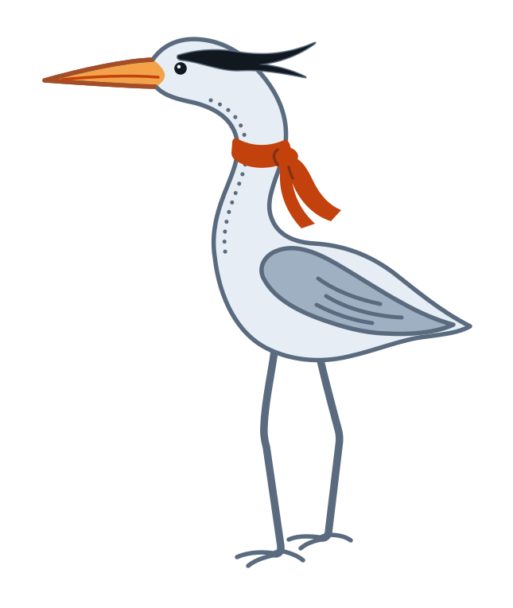

Kees
Jouw assistent voor alledaagse vragen, van hier. Eerlijk advies, bedragen en regels met een bron, en prijzen die kloppen.
Naar KeesKees is nu in een besloten testfase. Inloggen kan met je e-mailadres.
Wat is Kees?
Kees is een assistent waaraan je gewone vragen stelt: welke airfryer past bij jou, wat er geldt voor zorgtoeslag, wanneer je je zorgverzekering kunt wijzigen, hoeveel dagen het nog is tot Sinterklaas. Hij antwoordt kort en duidelijk, in gewoon Nederlands.
Kees is een computerprogramma (AI), geen mens. Dat zegt hij ook als je het vraagt.
Hoe zorgt Kees dat het klopt?
- Regels en bedragen komen uit officiële bronnen, zoals de Belastingdienst, Rijksoverheid en de Sociale Verzekeringsbank. Bij het antwoord staat de bron en de datum waarop die is nagekeken.
- Prijzen komen uit een lijst met producten, niet uit het geheugen van de assistent. Bij elke prijs staat waar en wanneer die is gecontroleerd.
- Elk antwoord wordt gecontroleerd voordat je het ziet. Staat er een bedrag, merk of website in dat niet uit de bronnen komt, dan haalt Kees het weg.
- Weet Kees het niet zeker, dan zegt hij dat, met wat wel bekend is en hoe je het zelf kunt nagaan.
Hoe verdient Kees geld?
Kees toont geen reclame en neemt geen betaalde plekken aan. Als je via een knop als Bekijk bij Coolblue iets koopt, kan Kees een kleine vergoeding van de winkel krijgen. Dat kost jou niets extra, en het bepaalt nooit wat Kees adviseert. Dat staat ook in de app.
Waar staat Kees nu?
Kees is een testversie. De productlijst is nog klein en we voegen steeds onderwerpen en winkels toe. Merk je een fout, dan kun je in de app onder een antwoord op Dit klopt niet drukken. Dat lezen we.
Contact
Vragen, ideeën of iets dat niet klopt? Mail naar hoi@hoikees.nl. Kees is een product van Dijk, Almelo.